Blog · March 29, 2014
Macro Time Lapse: Great Barrier Reef
Macro coral images by Daniel Stupin of Microworld Photography. Scroll down for video.
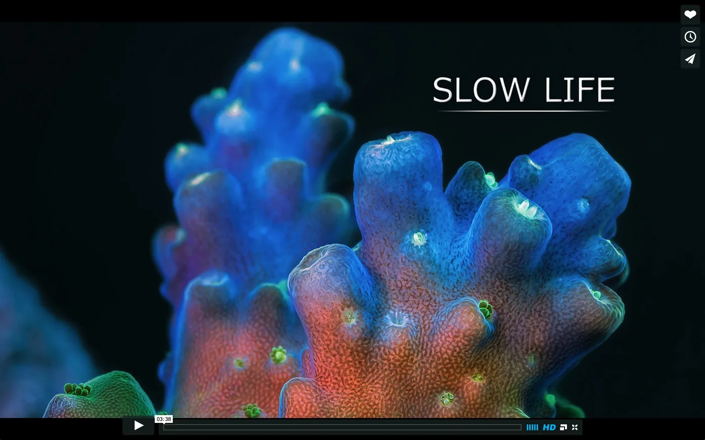 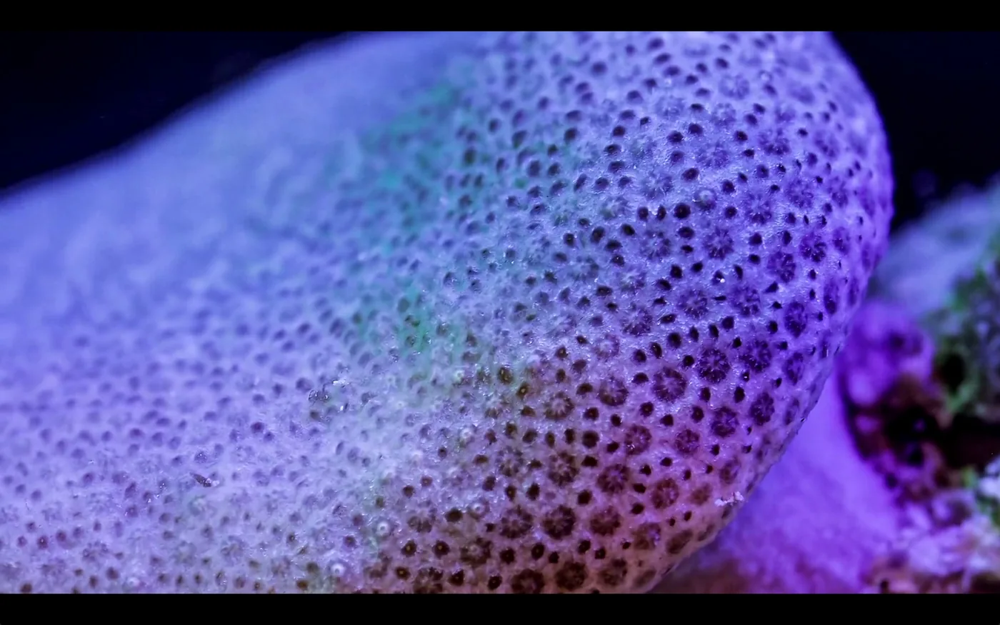 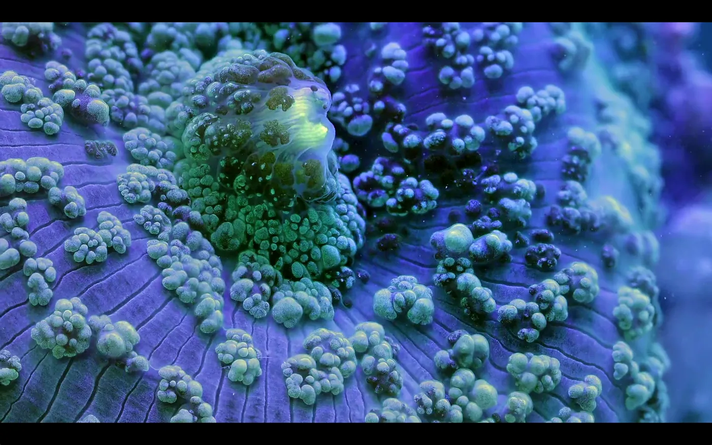 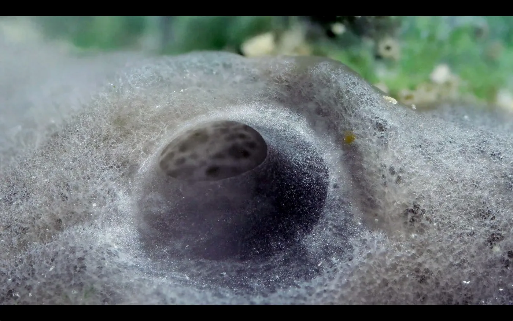 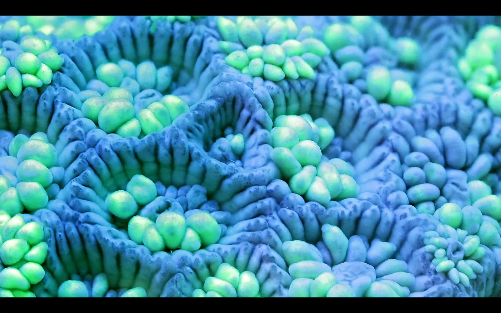 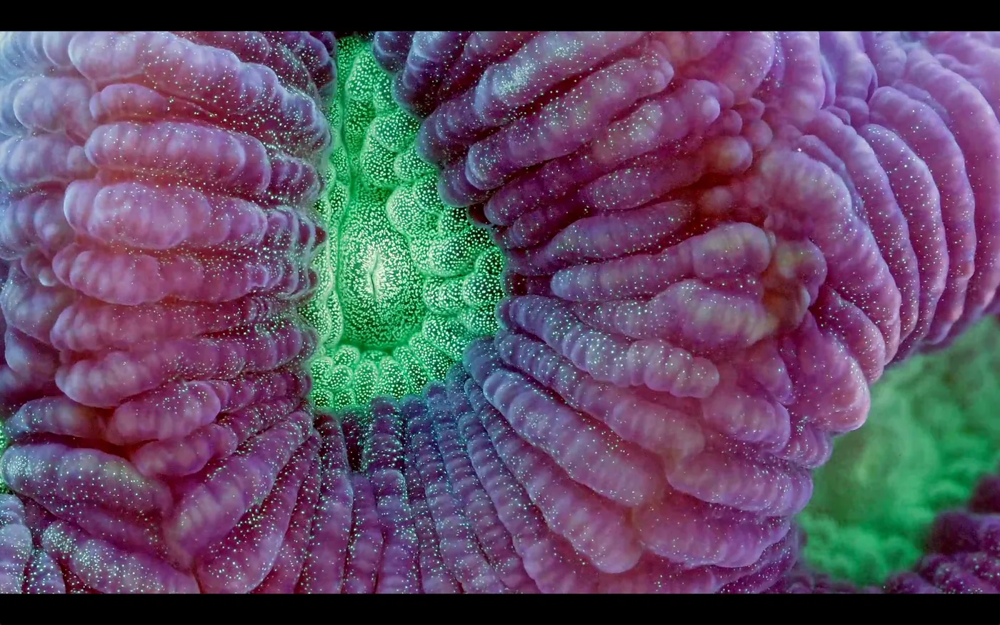 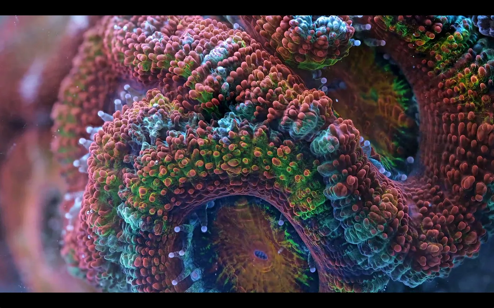 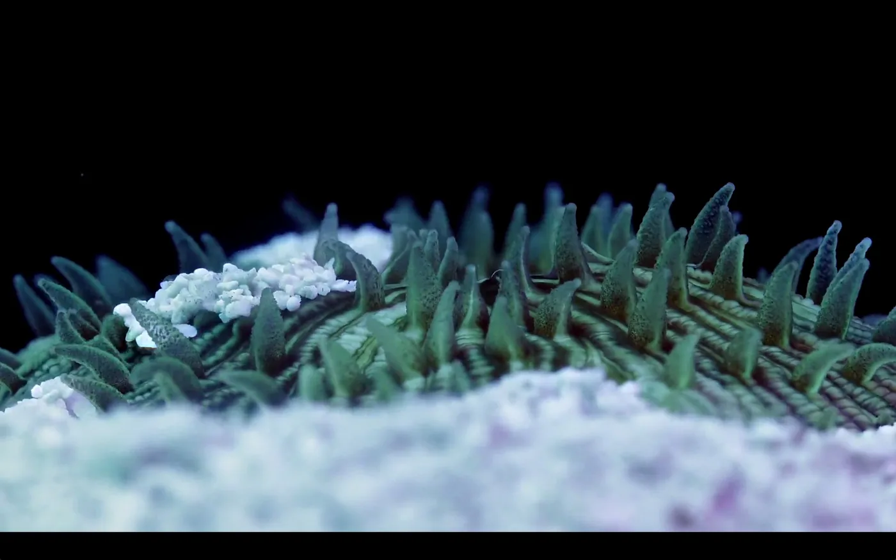 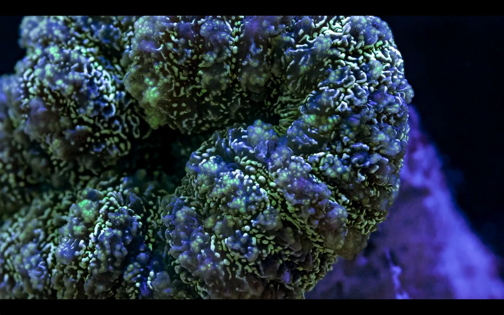 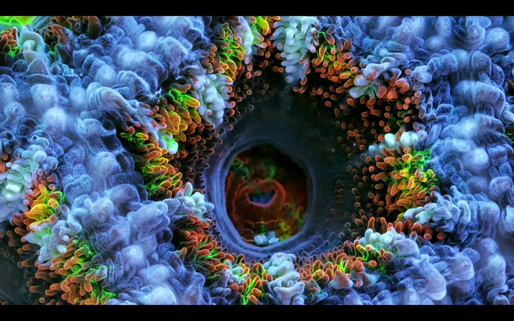 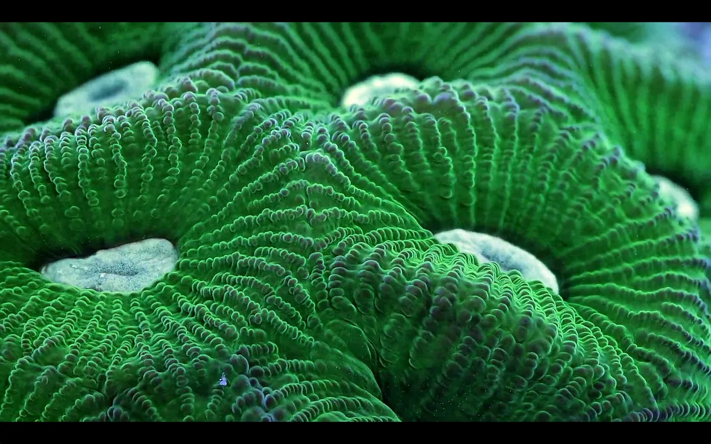 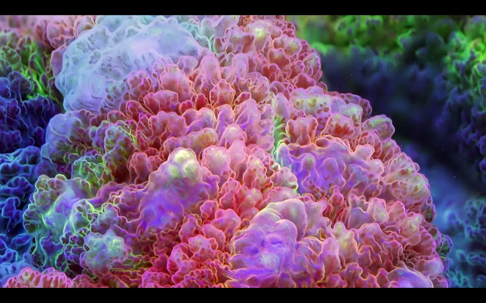 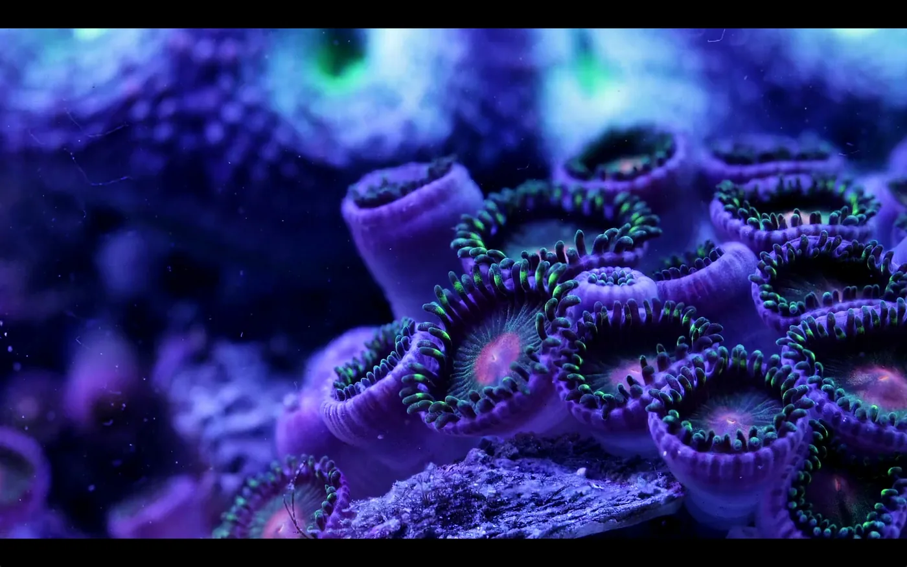 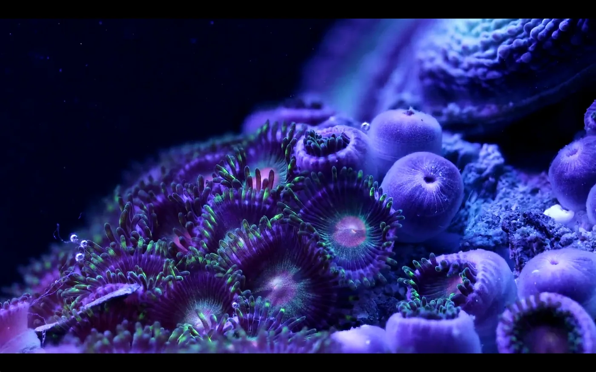 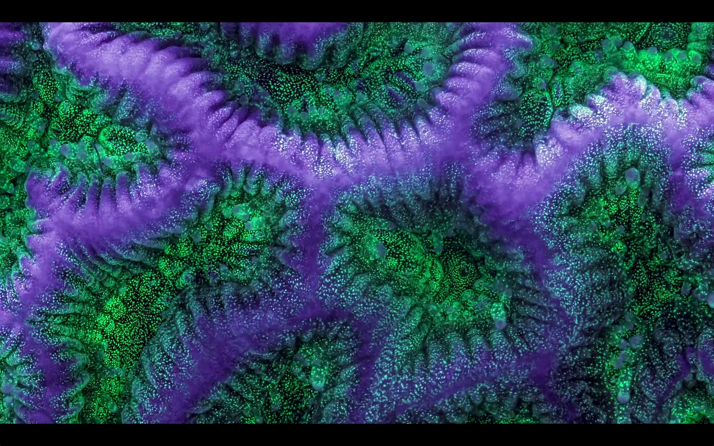 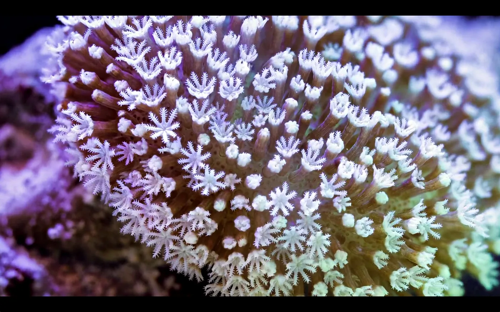
Daniel Stoupin‘s stunning reef timelapse consists of over 15,000 macro shots; each frame is 3-12 images merged together.
Despite the gorgeous footage, this view shows a near-microscopic oceanic battleground. Daniel explains:
By day most hard corals are cute and colorful. Their polyps coexist with their symbiotic algae and depend on light for nutrients produced by their photosynthetic symbionts. By night these polyps open up like flowers, but unlike flowers they turn into fierce predators, extend their tentacles, and sometimes invert their guts to digest the crap out of everything that they can reach. Coral colonies have to compete for substrate with other species, sometimes in violent battles. The winner is usually the species who digests faster or can resist digestive enzymes of the attackers better.
Enjoy the video:
Slow Life from Daniel Stoupin on Vimeo.
First published on my old blog, amyrobinson.wordpress.com, March 29, 2014.